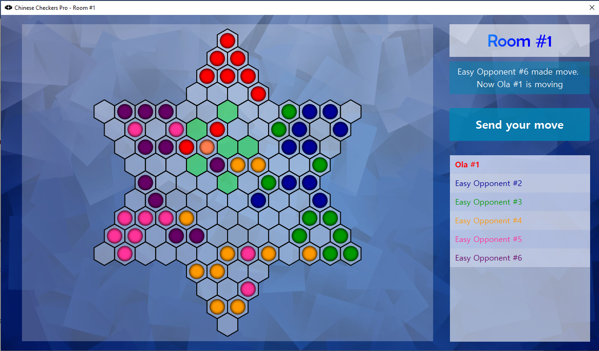

Jak do tego doszło?
Chińskie Warcaby to dwuosobowy projekt z trzeciego semestru studiów. Był wykonany w ramach kursu Technologie programowania, a jego celem było stworzenie w pełni działającej aplikacji w języku Java z interfejsem graficznym z wykorzystaniem wzorców projektowych. Ważnym elementem projektu było również trzymanie się zasad SOLID, a jakość kodu była sprawdzana ze szczególną uwagą.
Ważnym elementem projektu był również jego interfejs graficzny, wykonany w tym przypadku przy użyciu biblioteki JavaFX. Jego prostota i intuicyjność miała kluczowe znaczenie przy użytkowaniu gry.
Projekt projektem... ale jak to działa?
Aplikacja jest stworzona w technologii klient-serwer. Wszystko, co związane z logiką gry, zostało napisane po stronie serwera. Jest on odpowiedzialny za tworzenie użytkowników i pokoi do gry oraz steruje kolejnością wykonywania ruchów w grze. Odpowiada on również za weryfikowanie ruchów graczy (wysyłanie do klienta dostępnych ruchów) oraz sterowanie wirtualnymi graczami. Klient natomiast odpowiada za komunikację z serwerem w postaci zdefiniowanych zapytań. Użytkowanie aplikacji bez serwera nie jest możliwe.
Dobry kod nie jest zły!
Najważniejszym elementem gry po stronie klienta był niewątpliwie fragment kodu odpowiedzialny za sterowanie kolejnością graczy. Był to kluczowy element, potrzebny do prawidłowego działania aplikacji. Poniżej znajduje się fragment klasy Room.java, który odpowiada za prawidłowe wykonanie ruchu przez gracza.
Po stronie serwera najciekawszą klasą jest ta odpowiedzialna za komunikację z klientem, czyli RoomHandler.java, bez której aplikacja byłaby nie do użytku. W poniższej ramce znajduje się główna metoda z tej klasy.
Wszystkie źródła są dostępne pod następującymi linkami: klient oraz serwer.